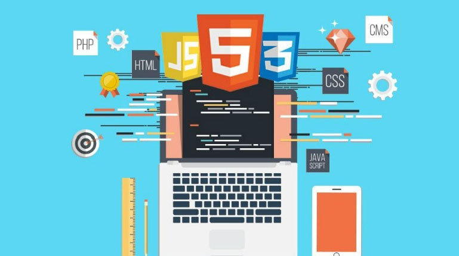

Desenvolvimento web é o processo de criação e manutenção de sites e aplicativos executados na internet ou em redes internas.
Front-End: Cria a parte visual e os elementos com que o usuário interage diretamente.
Back-End: Cuida da lógica interna, dos servidores e do banco de dados nos bastidores.
Domina tanto o Front-End quanto o Back-End para criar aplicações completas.

HTML: Estrutura o conteúdo das páginas.
CSS: Aplica estilos, cores e layouts visuais.
JavaScript: Adiciona interatividade e dinamismo aos sites.
Linguagens de Servidor: Incluem Python, PHP, Java e Node.js para o Back-End.
o Desenvolvimento web se consolidou como um dos pilares mais dinâmicos e essenciais da era digital.
Indispensável: Conecta negócios e usuários globalmente a cada segundo.
Evolutivo: Exige atualização constante por conta do surgimento frequente de novas tecnologias.
Acessível: Permite que iniciantes criem os primeiros projetos rapidamente apenas com HTML e CSS.
Versátil: Oferece trilhas de carreira distintas para perfis visuais (Front-End) e lógicos (Back-End).